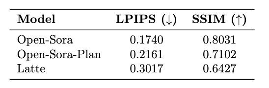

Evaluations
Qualitative Results

Measured total latency of PAB for different models for generating a single video on 8 NVIDIA H100 GPUs. When utilizing a single GPU, we achieve a speedup ranging from 1.26x to 1.32x, which remains stable across different schedulers. Scaling to multiple GPUs, our method achieves a speedup of up to 10.6x, which almost linearly scales with the number of GPUs due to our efficient improvement of sequence parallel.
Temperature Analysis
Quantitive Results
